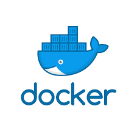
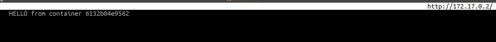

DXC Technology TSB Proyectos 
| Historial de revisiones | |
|---|---|
| Revisión 1.0 | 31/01/2018 |
| Primera versión | |
| Revisión 1.1 | 01/02/2018 |
| Añadidos capitulos 6 y 7 redes y swarms | |
Tabla de contenidos
Lista de figuras
- 1.1. Contenedores
- 2.1. Contenedores
- 7.1. Contenedores
Lista de ejemplos
- 2.1. ¿Docker corriendo?
- 2.2. Docker test run
- 2.3. Historial de docker
- 2.4. Capas de docker
- 3.1. Inspeccionar contenedores
- 3.2. Ver logs del docker
- 3.3. Acceder a consola instancia docker
- 4.1. Exponer puertos en contenedor
- 5.1. Crear volumen
- 5.2. Montar un volumen
- 6.1. Dockerfile
- 6.2. 95proxy
- 6.3. resolv.sh
- 6.4. entry.sh
- 6.5. Creación de un contenedor
- 6.6. Lanzar instancia docker desacoplada
- 6.7. Docker inspect
- 6.8. Testear servicio web
- 6.9. Copiar archivo a container
- 7.1. Redes por defecto
- 7.2. Inspeccionando red bridge
- 7.3. Conectarse a red personalizda.
Cuando hablamos de contenedores debemos entender cual era la necesidad que dio pie al desarrollo de dockers.
Las tecnologías como lxc, chroots, cgroups devienen de la necesidad de poder ejecutar espacios de usuarios separados de una forma segura y rápida.
P.ej. muchas instalaciones de bind y http se ejecutan desde chroots con el fin de confinar y aislar ataques maliciosos a estos servicios.
Paralelamente, los desarrolladores de aplicaciones gnu/Linux necesitaban entornos de compilación nativos en los cuales testear su código.
Las distros tipo Debian ofrecen un entorno llamado debootstrap y los entornos de redhat ofrecen un servicio de chroot llamado mock.
Podemos considerar entonces que docker es una evolución de estas necesidades. Parafraseando a Solomon Hykes,fundador de Docker.com.
-- La razón por la cual desarrollaron dockers fué la creciente complejidad inherente a los procesos de despliegue de código en entornos de computación productivos. De ahí surge el potente concepto de generar un contenedor que se pueda desplegar facilmente en el entorno de producción con todo el código librerias y dependendencias necesarias para su correcto funcionamiento.
Al convertir el docker en un proceso de usuario, todas las necesidades de software de este nuevo código se "contienen" en un solo archivo o imagen docker --
En abstracto, podemos visualizar los contenedores como un ejecutable con procesos librerias y espacios de usuario propios que nos evitan la necesidad de recompilar o reconfigurar la apliación cada vez que se despliegan en un entorno nuevo.
Lo que se pretende con esta mini-guia es enseñar al lector a defenderse en un entorno donde se han desplegado dockers.
Antes de nada, la primero que debemos hacer es validar que docker está habilitado y funcionando:
docker ps
Esta salida nos indicará que el servicio docker está corriendo y activo, sin embargo no hay instancias de imagenes docker corriendo.
Una vez que tenemos el servicio docker corriendo podemos validar su correcto funcionamiento lanzando el docker “hello world”
Ejemplo 2.2. Docker test run
:# docker run hello-world
Unable to find image 'hello-world:latest' locally
latest: Pulling from library/hello-world
ca4f61b1923c: Pull complete
Digest: sha256:66ef312bbac49c39a89aa9bcc3cb4f3c9e7de3788c944158df3ee0176d32b751
Status: Downloaded newer image for hello-world:latest
Hello from Docker!
This message shows that your installation appears to be working correctly.
To generate this message, Docker took the following steps:
El texto es bastante aclarativo; nos indica que el proceso de lanzamiento de instancias docker funciona correctamente.
Con el comando docker ps -a podemos averiguar el historial de instancias docker ejecutadas.
Ejemplo 2.3. Historial de docker
:# docker ps -aCONTAINER ID IMAGE COMMAND CREATED STATUS PORTS NAMES 8a1994a60831 hello-world "/hello" 31 minutes ago Exited (0) nifty_liskov
Docker usa un sistema de archivos layered o por "capas". Esto quiere decir que cada vez que corremos una imagen o container los cambios implementados en esa instancia se escriben al archivo de esa instancia. Para entender un poco mejor este concepto, podemos visualizar un sistema de archivos que solo escribe los cambios incrementales a disco. y cuando termina deja un identificador que nos permite recuperar esos cambios. Este identificador es un hash único que corresponde a la columna “CONTAINER ID”
Veamos un ejemplo:
Ejemplo 2.4. Capas de docker
:# docker run -it ubuntu /bin/bashUnable to find image 'ubuntu:latest' locally latest: Pulling from library/ubuntu 8f7c85c2269a: Pull complete 9e72e494a6dd: Pull complete 3009ec50c887: Pull complete 9d5ffccbec91: Pull complete e872a2642ce1: Pull complete Digest: sha256:d3fdf5b1f8e8a155c17d5786280af1f5a04c10e95145a515279cf17abdf0191f Status: Downloaded newer image for ubuntu:latestroot@5a0bbc6a2b4c:/# exit
Este comando nos pondrá en la shell bash de una imagen ubuntu/latest. Si observamos el proceso atentamente veremos que docker construye la imagen a base de capas. Desde la capa thin 8f7c85c2269a a la capa final que construye el ubuntu “latest” e872a2642ce1.

Al observar el prompt de la consola notaremos que este ha cambiado, ahora es “root@5a0bbc6a2b4c:/#”. En este momento estamos corriendo el proceso /bin/bash dentro del container ubuntu:latest. Al ejecutar el comando ps veremos que solo hay un proceso corriendo además del ps, el /bin/bash.
root@41e50f369f07:/# ps -afe
UID PID PPID C STIME TTY TIME CMD
root 1 0 0 10:10 ? 00:00:00 /bin/bash
root 10 1 0 10:11 ? 00:00:00 ps -afe
root@41e50f369f07:/#
Muy importante recordar que los containers tienen propiedades muy similares a las de un proceso unix. Por lo tanto cuando ejecutemos el comando exit el contenedor ubuntu:latest terminará su ejecución. Podemos proceder a salir de docker con el comando exit.
si tecleamos el comando docker ps veremos que no hay instancias docker corriendo. Ahora bien si tecleamos el comando docker ps -a veremos en el historial que una imagen corrió recientemente, en mi caso “silly_blackwell”
:# docker ps -aCONTAINER ID IMAGE COMMAND CREATED STATUS NAMES 41e50f369f07 ubuntu "/bin/bash" 6 minutes ago Exited (0) 4 seconds ago silly_blackwell 239bb146bb24 hello-world "/hello" 20 minutes ago Exited (0) 20 minutes ago focused_aryabhata
Bien, como los contenedores son procesos de usuario ejecutandose en el sistema, es muy dificil saber lo que ocurre dentro de este contenedor, especialmente cuando no lo hemos lanzado o creado nosotros.
Podríamos acoplarnos a las instancias docker corriendo con el comando docker attach {docker instance} Pero esto implicaría eliminar la instancia al teclear la orden exit. Evidentemente no queremos hacer esto en un entorno productivo.
Nota
Es posible desacoplarse de una instancia docker usando la combinación de teclas CTRL-p CTRL-q. Pero si no tenemos cuidado con esta secuencia de comandos nos podriamos volatilizar la instancia.
Para atajar este problem podemos recurrir al comando docker inspect {CONTAINER ID}.
Ejemplo 3.1. Inspeccionar contenedores
:# docker inspect bebde9e8efe9[ { "Id": "bebde9e8efe9fe3db00b2b3dc192881ee0ead7c365e24d1c4a810c2a8767bb73", "Created": "2018-01-24T13:54:03.71350842Z", "Path": "/bin/bash", "Args": [], "State": { "Status": "running", "Running": true, "Paused": false, "Restarting": false, "OOMKilled": false, "Dead": false, ...
Este comando nos mostrará una ingente cantidad de información en formato JSON array. Si queremos
filtrar estar información para buscar un dato específico como, p.ej la IP podemos añadir el parametro --format
combinado con unos selectores que nos permiten filtrar ciertas variables del array JSON.
:# docker inspect --format='{{range .NetworkSettings.Networks}}\ {{.IPAddress}}{{end}}' bebde9e8efe9172.17.0.2
Otro comando interesante es docker logs; que nos permite ver los logs del contenedor en ejecución:
Ejemplo 3.2. Ver logs del docker
:# docker run --name test -d busybox sh -c "while true; do $(echo date);\ sleep 1; done"Unable to find image 'busybox:latest' locally latest: Pulling from library/busybox 57310166fe88: Pull complete Digest: sha256:dc57f405b06f43c4573ef0368652af95bafde23ec5430efd202b736909009758 Status: Downloaded newer image for busybox:latest 59ccf0c14edeaf5fb9f8f7b1dde393167de43cd59727370e31d75d49ab8d5e3a:# docker psCONTAINER ID IMAGE COMMAND CREATED STATUS PORTS NAMES 59ccf0c14ede busybox "sh -c 'while true..." 3 seconds ago Up 2 seconds test bebde9e8efe9 ubuntu "/bin/bash" 21 minutes ago Up 21 minutes elated_sinoussi:# docker logs 59ccf0c14edeWed Jan 24 14:15:06 UTC 2018 Wed Jan 24 14:15:07 UTC 2018 Wed Jan 24 14:15:08 UTC 2018 Wed Jan 24 14:15:09 UTC 2018 ...
Como vemos aquí, el comando docker logs {CONTAINER ID} arroja un log con la actividad del container.
Si realmente queremos acoplarnos a una instancia de docker y tener consola para poder interactuar con el sistema podemos usar el comando docker exec
Ejemplo 3.3. Acceder a consola instancia docker
:# docker exec -i -t bebde9e8efe9 /bin/bashroot@bebde9e8efe9:/#
El cambio en el prompt nos indicará que estamos ejecutando bash en la instancia docker. Cuando hayamos terminado podemos teclear la orden exit. La instancia docker seguirá corriendo desacoplada.
Para poder acceder a los servicios de una instancia de contenedor es necesario exponer puertos en el lado del host. Para esto podemos usar
el parametro -p.
Supongamos que queremos ejecutar una instancia de docker con nginx. Para ello abriremos el puerto 80 en esta instancia redirigiendo las peticiones al puerto internto 8080 del docker que es donde está escuchando el servicio nginx.
Ejemplo 4.1. Exponer puertos en contenedor
:# docker run -i -t -d -p 80:8080 nginxUnable to find image 'nginx:latest' locally latest: Pulling from library/nginx e7bb522d92ff: Already exists 6edc05228666: Pull complete cd866a17e81f: Pull complete Digest: sha256:285b49d42c703fdf257d1e2422765c4ba9d3e37768d6ea83d7fe2043dad6e63d Status: Downloaded newer image for nginx:latest:#:# docker psCONTAINER ID IMAGE COMMAND CREATED STATUS PORTS NAMES 4ec3097884c4 nginx "nginx -g 'daemon ..." 4 seconds a Up 2 seconds 80/tcp, 0.0.0.0:80->8080/tcp goofy_franklin
Observaremos mediante el comando docker ps que la columna PORTS contiene información describiendo en primer lugar la ip de escucha, seguido por el puerto interno del docker que en este caso se encutra redirigido al puerto 80 del lado del sistema anfitrión.
Es decir, docker está redirigiendo las peticines externas del puerto 80 en el anfitrion al puerto interno 8080 de esta instancia.
Para montar un volumen del sistema anfitrión en la instancia docker es conveniente crear un volumen especializado mediante el comando docker volume create { VOLUME NAME }.
Veamos un ejemplo completo
Creamos un volumen llamado
test-volume.Vamos a inspeccionar el volumen
test-volumey ver como está configurado.:# docker volume inspect test-volume[ { "Driver": "local", "Labels": {}, "Mountpoint": "/var/lib/docker/volumes/test-volume/_data", "Name": "test-volume", "Options": {}, "Scope": "local" } ]La variable
Mountpoint:tiene el valor /var/lib/docker/volumes/test-volume/_data indicandonos de esta manera que los datos que encontremos en la carpeta /app de la instancia del contnedor estarán montados en la carpeta_data.Montamos el volumen sobre una imagen nginx.
Nota
El parametro
--mountsolo está disponible a partir de la versión 17.06 de docker. Si nuestra versión es anterior debemos de usar el parametor-vEjemplo 5.2. Montar un volumen
Para montar el volumén
test-volumeusaremos el parametro--mountdurante la ejecución del la instancia del container.:# docker run -i -t -d \ --name devtest \ --mount source=test-volume,target=/app \ nginx:latest3280d2431de6d927adcae5a6c36a6545baf4f91c48134965626fd68ababf2c7Nos acoplamos a la instancia de docker con el comando docker exec:
:# docker exec -i -t 3280d2431de6 /bin/bashroot@3280d2431de6:/#root@3280d2431de6:# cd /approot@3280d2431de6:# touch holaSi tecleamos la orden exit o abrimos otra terminal y nos cambiamos al directorio
/var/lib/docker/volumes/test-volume/_dataveremos que existe un archivo de reciente creación llamadohola.
De esta manera podemos tener un volumen persistente que se puede compartir entre varias instancia de docker.
Para entender de una manera práctica Docker vamos a crear una instancia de una aplicación web plenamente funcional.
Procedimiento 6.1. Aplicación web
Primero crearemos una carpeta llamada
docker_web:# mkdir docker_web
Nos posicionamos dentro de este direcotorio con un
:# cd docker_web
Creamos un archivo Dockefile
vim Dockerfile
Creamos el script de configuración del proxy para que la instancia docker pueda actulizarse e instalar los paquetes necesarios.
vim 95proxy
Creamos el script
resolv.shque modificará el/etc/resolv.confpara que se adapte a la red con proxy.Creamos el script
entry.shque se encargará de arrancar el apache automaticamente cada vez que creemos una instancia de esta imagen docker.Lanzamos el proceso de creación del contenedor:
Ejemplo 6.5. Creación de un contenedor
:# docker build . # El punto es necesario.Sending build context to Docker daemon 6.656 kB Step 1/19 : FROM ubuntu:latest ---> 2a4cca5ac898 Step 2/19 : MAINTAINER Antonio Medina: 1.0 ---> Using cache ---> a8ec2d0857be Step 3/19 : ENV HTTP_PROXY 'http://web-proxy.sgp.hp.com:8080' ---> Using cache ---> 162ebdc08bfb Step 4/19 : ENV HTTPS_PROXY 'http://web-proxy.sgp.hp.com:8080' ---> Using cache ---> 7486ee9f29ee Step 5/19 : COPY resolv.sh /tmp/resolv.sh ---> Using cache ---> 33b81e4888b0 .... Step 18/19 : CMD /usr/sbin/apache2 -D FOREGROUND ---> Using cache ---> a10fc4c80db0 Step 19/19 : ENTRYPOINT /usr/bin/entry.sh ---> Using cache ---> 3977cff94b2d Successfully built 3977cff94b2d :#Tomamos nota del id en Successfully built “3977cff94b2d”
Este es el id de nuestro build y nos servirá para lanzar nuestro flamante servidor web.
Para poder lanzar esta imagen y dejarlo corriendo como si fuera un demonio lo lanzaremos con la opción
-dque lanzara la instancia de la imagén en modo desacoplado.Ejemplo 6.6. Lanzar instancia docker desacoplada
:# docker run -t -i -d 3977cff94b2da18f7588675f791a3b6f2e93e51f624019adc7a76647f70567c0a82fc48e2d6d :#Este comando nos devolverá un identificador de la instancia que acabamos de lanzar.
Si lanzamos el comando docker ps ahora veremos que hay una instancia con id a18f7588675f corriendo con id de imagen 3977cff94b2d
Ahora debemos validar que esta nueva instancia de ubuntu con apache está realmente atendiendo peticiones en el puerto 80 con el comando wget o curl. Para ello debemos de averiguar que ip tiene esta instancia mediante el comando docker inspect .
Ejemplo 6.7. Docker inspect
:#docker inspect --format='{{range .NetworkSettings.Networks}}\ > {{.IPAddress}}{{end}}' a18f7588675f172.17.0.2Ejemplo 6.8. Testear servicio web
:# wget 172.17.0.2--2018-01-29 15:31:40-- http://172.17.0.2/ Connecting to 172.17.0.2:80... connected. HTTP request sent, awaiting response... 200 OK Length: 11321 (11K) [text/html] Saving to: ‘index.html.1’ index.html.1 100%[=========>] 11,06K --.-KB/s in 0s 2018-01-29 15:31:40 (171 MB/s) - ‘index.html.1’ saved [11321/11321]Si hacemos un cat del archivo
index.html.1veremos que es la pagina de inicio de un servidor apache recién instalado.Para validar que realmente nos estamos conectando a la instancia de esta imagen vamos a modificar el index.html dentro de la instancia actual.
Ejemplo 6.9. Copiar archivo a container
:# echo "HELLO from container a18f7588675f" > index.html:# docker cp index.html a18f7588675f:/var/www/html/index.htmlEn este ejemplo voy a usar elinks, un navegador de texto.
elinks 172.17.0.2
Tabla de contenidos
Cuando instalamos docker veremos que se instalan tres redes automaticamente. Para ver las redes disponibles podemos usar el comando docker network ls.
Ejemplo 7.1. Redes por defecto
:# docker network lsNETWORK ID NAME DRIVER SCOPE eadfabef9239 bridge bridge local 100f01849e3d host host local 8ecd0fa3f1c5 none null local
Cuando corremos una instancia docker esta se acopla por defecto en modo bridge a la red “bridge”. Si ejecutamos el comando ip addr desde la consola del servidor veremos que hay un interfaz docker0. Este interfaz virtual puede considerarse a todos los efectos como un bridge además de ser una puerta de enlace a la red exterior.
Veamos este interfaz:
:# ip a show docker09: docker0: <BROADCAST,MULTICAST,UP,LOWER_UP> mtu 1500 qdisc noqueue state UP group default link/ether 02:42:88:66:d0:d5 brd ff:ff:ff:ff:ff:ff inet 172.17.0.1/16 scope global docker0 valid_lft forever preferred_lft forever inet6 fe80::42:88ff:fe66:d0d5/64 scope link valid_lft forever preferred_lft forever
Como veremos tiene la ip de la puerta de enlace de las instancias docker que hemos creado. Todas las instancias docker reciben una ip dentro de la red 172.17.0.0/16.
Si inspeccionamos la red bridge con un docker network inspect bridge entednderemos la relación de una forma mas clara.
Ejemplo 7.2. Inspeccionando red bridge
:# docker network inspect bridge... "Internal": false, "Attachable": false, "Containers": { "3280d2431de6d927adcae5a6c36a6545baf4f91c48134965626fd68ababf2c75": { "Name": "devtest", "EndpointID": "d09604798b13f5b4f1a77ed2244e77e3918674da2aff5845d86914dcfe2c22a8", "MacAddress": "02:42:ac:11:00:06", "IPv4Address": "172.17.0.6/16", "IPv6Address": "" }, "39f0cade4978e06c45068b795cc1ed596825b6df088aa6100103f91c3979450b": { "Name": "nervous_wozniak", "EndpointID": "df173cf1b4bdf5381c6156d0b350e844d93ab251d90d0668baeb5e659534f669", "MacAddress": "02:42:ac:11:00:03", "IPv4Address": "172.17.0.3/16", "IPv6Address": "" }, "4ec3097884c40d58ca093d1c83fd6a6fe3382b8368f14553e726a882ce6efe7e": { "Name": "goofy_franklin", "EndpointID": "bb2966f797c3c3158d79eb9f101ca9c3a5d1df29681514aadbeb2f800bfad7da", "MacAddress": "02:42:ac:11:00:05", "IPv4Address": "172.17.0.5/16", "IPv6Address": "" }, ...
Veremos que nuestras instancias docker están conectados a este bridge y las ips asignadas a cada una de ellass.
Si observamos de nuevo la info del docker network inspect veremos que hay un elemento del array JSON llamado “IPAM”. Este elemento define la configuración del tipo de conexión la red y la puerta de enlace.
IPAM": {
"Driver": "default",
"Options": null,
"Config": [
{
"Subnet": "172.17.0.0/16",
"Gateway": "172.17.0.1"
}
]
},
En definitiva la conexión al exterior es en modo “NAT”.
Muchas veces se hace necesario crear redes especializadas tipo overlay o vxlan ya sea mediante un bridge virtual o físico. Para este tipo de escenario se hace necesario definir a la instancia docker a que bridge conectarse.
Veamos un ejemplo de conexión a una red personalizad.
Ejemplo 7.3. Conectarse a red personalizda.
el comando docker run acepta el parametro --net {NET para
definir la red a la que conectarnos.
:# docker run -it --net host -p 80 httpd /bin/bashroot@HOST:#
En este momento estamos en la shell bash de la instancia docker de la imagen httpd.
al ser una conexión tipo “host” nos muestra en el prompt el nombre del anfitrión. Vamos a lanzar el servicio httpd en background.
:# /usr/bin/httpd-foreground &# AH00558: httpd: Could not reliably determine the server's fully qualified domain name, using 127.0.1.1. Set the 'ServerName' directive globally to suppress this message ...
Ahora abriremos una consola extra en el servidor anfitrión y usaremos elinks para ver si el servicio httpd está expuesto en el puerto 80. P.ej. Si la ip de nuestro anfitrión es 10.0.2.15 podemos usar el navegador de text elinks.
:# elinks 10.0.2.15
Al ejecutar el comando docker network ls se nos han mostrado dos redes extras: none y host. Describiré brevemente estas dos redes.
La red none se puede considerar una red “null” donde la instancia docker no tendría conectividad externa. El comando docker network inspect none nos mostraría que las instancias conectadas a esta red no tienen IP.
La red host es una red donde los puertos asignados a la instancia docker se asignarian directamente a la ip del servidor anfitrión. Si lanzaramos una instancia docker de apache escuchando en el puerto 80 sería como una instancia apache corriendo nativamente en nuestro servidor anfitrión.
Nota
Es interesante tener en cuenta que docker usa iptables para redirigir puertos desde la maquina anfitrión a la instancia que ha solicitado un mapeo de puertos.